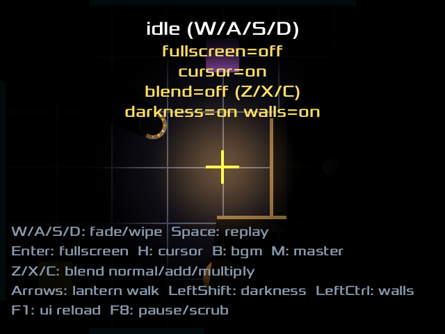
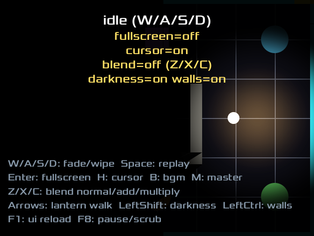
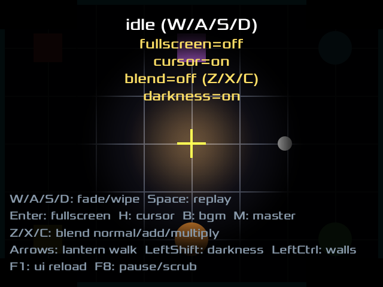

shadow_light_front光が壁の手前: 壁の裏の目印（白丸）が影に沈んで見えない（Shadow.itemsFor の Multiply 黒 Poly）
shadow_light_behind光が壁の向こう側へ回り込むと同じ目印が照らされて見える（壁と遮蔽ポリゴンは同じ定義から導出）
shadow_walls_off対照カット: shadow_light_front と同じ光位置で walls=false。目印が沈まず見える＝暗さは壁の影であって距離減衰ではない
lightmap_two_lanterns光マップ方式: ランタン 2 個が同時に照らし、同じ壁から 2 方向へ影が伸びる（Light.lightMapPass + lightMapOverlay。暗幕方式では不可能な絵）
lightmap_swingランタン A が壁の反対側へ回った連番: 同じ壁の影が別の向きへ倒れる（影が光の位置から導かれている証拠）。A の長い影が B の灯りまで消しているのは v1 の割り切りどおり（Light.lightMapPass の doc 参照）